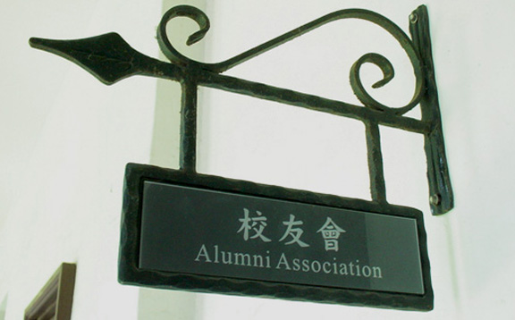
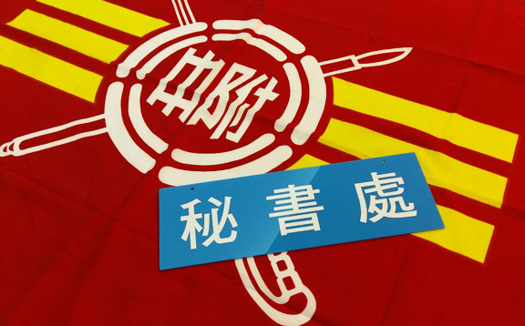
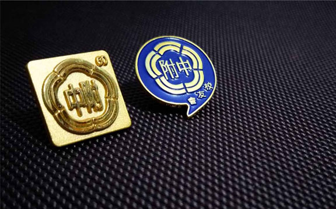

 理監事會 本會宗旨為聯繫校友情感、協助母校發展、幫助在校學弟妹並增進校友與母校之共同榮譽。設有理事會與監事會，並由秘書處安排每季召開一次理監事聯席會議，邀請各位附友一同列席參與議程給予建議！本屆為第十六屆理監事，於114年06月25日完成改選 理監事名單 專案計畫
 校友會的發電機 - 秘書處 秘書處為本會常設組織，負責會員招募、捐款募集、執行理監事會議決議之項目、策劃各類活動、本會對外公關等；秉持著無私奉獻的心和絕不怕艱難的態度，服務附友們，為校友搭起連絡的橋梁！ More 校友服務
 數位典藏專案 - 附中數位典藏系統 Demo V1 拼湊起校友們的記憶，回顧起附中創校以來的歷史，提供電子書瀏覽、老照片典藏館、紀念品陳列展示、影音資料保存等線上服務，讓我們一同複習藍天下的青春！ Enter